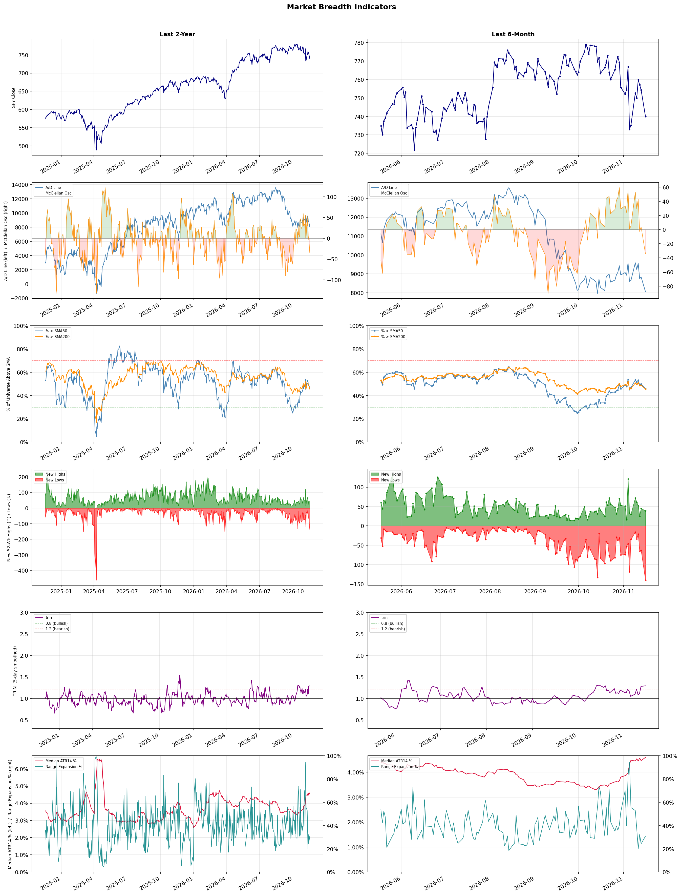

A daily market breadth and sector rotation report for active investors
| Item | Read |
|---|---|
| Regime downgraded | Neutral → Defensive |
| Regime | Defensive |
| Risk posture | Defensive |
| Universe | 1,309 stocks tracked · 39 new 52-week highs · 30 active swing setups |
| Breadth | only 45.9% of tracked stocks are above SMA50, new lows exceed new highs (140 vs 39), McClellan oscillator (breadth momentum) is negative at -34.5 |
| Leadership | Advertising Agencies, Apparel Manufacturing, and Discount Stores |
| Weakest groups | Other Industrial Metals & Mining, Uranium, and Electrical Equipment & Parts |
Use this report to prioritize research and chart review; validate entries, stops, liquidity, earnings, and risk before acting.
| Item | Read |
|---|---|
| Primary read | Defensive regime with Defensive risk posture. |
| Research queue | APP, STGW, MGNI, EVC, TTD |
| Leadership focus | Advertising Agencies, Apparel Manufacturing, and Discount Stores |
| Caution list | Other Industrial Metals & Mining, Uranium, and Electrical Equipment & Parts |
| Review prompt | Check extension risk, chart location, fundamentals, valuation, and earnings before using any research row. |
| Item | Read |
|---|---|
| Primary read | 4 active risk warnings; use screen output as watchlist input only. |
| Bullish screens | COST, CHD, CL, CB, PGR |
| Bearish screens | COIN, TLRY, IQ, NFLX, TRIP |
| Alerts / levels | Automated trigger, stop, ATR, liquidity, reward/risk, and event-risk levels are pending future enrichment. |
| Review prompt | Open the linked chart, define trigger and invalidation, then check liquidity and event risk independently. |
Risk Posture: Defensive — screen backdrop favors caution; require independent risk review before new exposure
Metric context: McClellan below -50 = elevated selling pressure; below -100 = washout territory. Range Expansion = share of stocks with daily range above their 20-day average. Signal Density = share of tracked names appearing in signal screens.
| Breadth Date | % > SMA50 | % > SMA200 | New Highs | New Lows | McClellan | Median Range | Avg Range | Median ATR14 | Range Expansion | Signal Density |
|---|---|---|---|---|---|---|---|---|---|---|
| 2026-11-16 | 45.9% | 45.5% | 39 | 140 | -34.5 | 3.3% | 4.0% | 4.6% | 30.9% | 20.7% |

Regime downgraded: Neutral → Defensive
Prior comparison date: November 13, 2026
| Metric | Prior | Current | Change |
|---|---|---|---|
| Regime | Neutral | Defensive | changed |
| Risk Posture | Defensive | Defensive | unchanged |
| % > SMA50 | 49.9% | 45.9% | -4.0 pts |
| % > SMA200 | 48.8% | 45.5% | -3.3 pts |
| New Highs | 41 | 39 | -2 |
| New Lows | 63 | 140 | -77 |
Top-10 industries entering: Insurance - Property & Casualty. Top-10 industries leaving: Beverages - Non-Alcoholic. New multi-signal long setups: CHD, CL, DUK, ED, HUM. New multi-signal short setups: ALB, BTDR, GMED, GNL, HTZ.
| Status | Tickers | Read |
|---|---|---|
| Added | ALB, BTDR, CHD, CL, DUK, ED, GMED, GNL | New technical screen matches vs prior report. |
| Removed | BDX, CRSP, EPD, ES, JNJ, LCID, NUVB, OCUL | No longer present in today's technical screen matches. |
| Still Active | CB, COIN, COST, FLNC, KC, MPT, OGE, PGR | Appeared in both current and prior reports. |
| Promoted | none | Model Screen Score improved by at least 15 points. |
| Downgraded | none | Model Screen Score declined by at least 15 points. |
| Direction | Industry | ETF | Prior Rank | Current Rank | Days | Rank Change |
|---|---|---|---|---|---|---|
| Rose | Airlines | N/A | 78 | 14 | 28 | +64 |
| Rose | Advertising Agencies | N/A | 56 | 1 | 35 | +55 |
| Rose | Resorts & Casinos | N/A | 87 | 35 | 42 | +52 |
| Rose | REIT - Retail | N/A | 69 | 17 | 35 | +52 |
| Rose | Integrated Freight & Logistics | N/A | 74 | 23 | 35 | +51 |
Bull: The airline industry is experiencing a rising relative strength due to a robust recovery in travel demand, as highlighted by the optimism in articles like "Best Airline Stocks to Buy in 2026" from The Motley Fool, which suggests long-term growth potential. Despite recent turbulence from geopolitical tensions and disappointing earnings reports, such as those from United Airlines, the market appears to be pricing in a rebound in travel and consumer confidence, as evidenced by the resilience of airline stocks even amidst broader market declines. This indicates that investors are increasingly viewing airlines as a compelling opportunity for growth as travel continues to normalize post-pandemic.
Bear: While the bull thesis highlights a recovery in travel demand, it overlooks the significant headwinds facing the airline industry, including rising fuel costs, geopolitical tensions, and ongoing operational disruptions, as evidenced by the recent flight chaos in the U.S. Furthermore, disappointing earnings reports, such as those from United Airlines, suggest that the market may be overly optimistic about the industry's recovery trajectory, indicating that investors should be cautious rather than confident in the long-term growth potential of airline stocks.
Verdict: The airline industry's rising relative strength is primarily driven by a robust recovery in travel demand, as consumers return to pre-pandemic travel habits, which is reflected in optimistic market sentiment and resilience in airline stock prices. However, key risks remain, including rising fuel costs and geopolitical tensions that could hinder profitability and operational stability, suggesting that investors should closely monitor these factors before making long-term commitments in airline stocks.
Sources: Google News
Bull: The Advertising Agencies sector is experiencing rising relative strength primarily due to its strategic adaptation to technological advancements, particularly artificial intelligence, which is enhancing operational efficiencies and targeting capabilities. Headlines highlighting the potential for ad agency stocks to leverage AI disruption suggest a transformative shift in how advertising is executed, driving investor optimism and positioning these companies for robust growth. Additionally, the focus on advertising technology as a key investment area for the coming years underscores a broader trend of digital transformation that is likely to benefit the sector significantly.
Bear: While the advertising agencies sector may currently show rising relative strength, this optimism overlooks significant risks, including potential overvaluation amidst a challenging macroeconomic environment. The reliance on AI, while promising, could lead to increased competition and margin pressures as firms scramble to adopt similar technologies, potentially diluting the perceived advantages. Furthermore, economic uncertainties and shifting consumer behaviors could dampen advertising budgets, undermining growth prospects despite technological advancements.
Verdict: The advertising agencies sector is experiencing a rise in relative strength due to its strategic embrace of artificial intelligence, which enhances operational efficiencies and targeting capabilities, driving investor optimism for future growth. However, a key risk lies in potential overvaluation and increased competition as firms adopt similar technologies, alongside economic uncertainties that could impact advertising budgets and overall growth prospects. Investors should monitor macroeconomic indicators and consumer behavior trends closely to assess the sustainability of this growth.
Sources: Google News
Bull: The Resorts & Casinos sector is experiencing rising relative strength primarily due to robust earnings reports and optimistic projections for 2026, as highlighted by The Motley Fool's analysis of top casino stocks. Additionally, the resilience of major players like Wynn Resorts, which is noted for its strong global hotel and casino portfolio, suggests that these companies are effectively navigating challenges and capitalizing on consumer discretionary spending trends. This positive momentum, coupled with strategic deal-making in the sector, positions Resorts & Casinos favorably against other industries.
Bear: While the Resorts & Casinos sector may currently exhibit rising relative strength, this momentum could be misleading due to underlying economic pressures, such as potential recession risks and declining consumer discretionary spending. Additionally, the emphasis on deal-making amid slower sector growth raises concerns about overvaluation and the sustainability of earnings, as companies may be resorting to mergers and acquisitions to mask organic growth challenges rather than genuinely capitalizing on market opportunities.
Verdict: The Resorts & Casinos sector's rising strength is primarily driven by strong earnings reports and positive growth projections, indicating that major players are successfully leveraging consumer discretionary spending. However, the key risk lies in the potential for economic downturns and declining consumer spending, which could undermine the sustainability of this growth and expose companies to overvaluation concerns. Investors should monitor economic indicators closely while considering positions in this sector.
Sources: Google News
Bull: The rising relative strength of the Retail REIT sector can be attributed to strong market fundamentals and tight supply, as highlighted by Nareit, which suggest that demand for retail space remains robust despite broader economic challenges. Additionally, the positive sentiment from Morningstar and Yahoo Finance indicates that investors are recognizing the resilience of retail REITs in navigating higher interest rates and industry headwinds, positioning them as attractive investment opportunities going forward.
Bear: While the rising relative strength of Retail REITs may suggest short-term resilience, it's crucial to consider the broader economic landscape, including the potential for a recession, ongoing inflationary pressures, and changing consumer behavior towards e-commerce. The positive sentiment from analysts may overlook the long-term structural challenges facing brick-and-mortar retail, such as increasing vacancy rates and the risk of store closures, which could undermine the sustainability of demand for retail space and ultimately impact the profitability of these REITs.
Verdict: The Retail REIT sector's rising relative strength is primarily driven by strong market fundamentals and tight supply, indicating robust demand for retail space despite economic challenges. However, investors should remain cautious of the key risk posed by potential recessionary pressures and the ongoing shift towards e-commerce, which could lead to increased vacancy rates and store closures, undermining the long-term sustainability of retail REIT profitability.
Sources: Google News
Bull: The Integrated Freight & Logistics sector is experiencing rising relative strength due to a combination of technological advancements and strategic partnerships aimed at addressing long-standing industry challenges, as highlighted by Groundtruth's collaboration with J.B. Hunt to tackle billing issues. Additionally, the introduction of innovative solutions like the integrated air cargo data and payment system in Hong Kong indicates a shift towards more efficient and streamlined operations, further enhancing the sector's appeal. These developments position the industry favorably for growth, especially as demand for efficient supply chain solutions continues to rise.
Bear: While the Integrated Freight & Logistics sector may currently show rising relative strength, this could be misleading as it often reflects short-term market sentiment rather than sustainable growth. The industry's reliance on technological advancements and partnerships, such as the collaboration between Groundtruth and J.B. Hunt, does not guarantee long-term profitability, especially given the persistent issues of rising operational costs, regulatory pressures, and potential economic downturns that could dampen demand for freight services. Moreover, the introduction of new solutions like the air cargo data and payment system may not significantly impact the overall market if they fail to address the fundamental inefficiencies and competitive pressures faced by the industry.
Verdict: The Integrated Freight & Logistics sector is likely experiencing rising relative strength due to technological advancements and strategic partnerships that enhance operational efficiency and address longstanding challenges. However, investors should remain cautious of the key risk highlighted by the bear thesis: the potential for rising operational costs and economic downturns to undermine demand and profitability, suggesting a need for careful evaluation of long-term sustainability in this evolving landscape.
Sources: Google News
| Direction | Industry | ETF | Prior Rank | Current Rank | Days | Rank Change |
|---|---|---|---|---|---|---|
| Fell | Copper | COPX | 3 | 83 | 35 | -80 |
| Fell | Semiconductor Equipment & Materials | SOXX | 4 | 82 | 42 | -78 |
| Fell | Computer Hardware | XLK | 10 | 84 | 42 | -74 |
| Fell | Semiconductors | SOXX | 8 | 80 | 42 | -72 |
| Fell | Electronic Components | XLK | 6 | 74 | 42 | -68 |
Bear: While the bull analyst attributes the recent decline in copper's relative strength primarily to tariff uncertainty and a shift in investor focus, it's crucial to recognize that the fundamental demand for copper is also under significant pressure due to slowing global economic growth and potential recessions in key markets. Additionally, the surge in alternative materials and technologies, particularly in the renewable energy and electric vehicle sectors, could further diminish copper's long-term demand outlook, making the current sell-off a reflection of deeper structural issues rather than just short-term sentiment shifts.
Bull: The recent decline in the relative strength of copper can primarily be attributed to growing uncertainty surrounding tariffs, as indicated by the headline "Copper Stocks Tumble as Tariff Doubt Reverses Record Rally." This uncertainty has negatively impacted investor sentiment, leading to significant sell-offs in major copper stocks like Freeport-McMoRan and Teck Resources. Additionally, the focus on other sectors, such as AI and Canadian mining stocks, as highlighted in multiple headlines, may have diverted investment away from copper, further contributing to its relative weakness.
Verdict: The recent decline in copper prices is primarily driven by a combination of tariff uncertainty impacting investor sentiment and broader concerns regarding slowing global economic growth, which threatens demand. Additionally, the increasing adoption of alternative materials in renewable energy and electric vehicles poses a significant risk to copper's long-term demand outlook. Investors should closely monitor economic indicators and developments in alternative technologies to gauge the potential for further declines in copper prices.
Sources: Google News
Bear: While the bull analyst highlights potential recovery in the semiconductor sector, the recent selloff in AI chip stocks, including significant declines in Arm and Marvell, signals deeper issues related to oversupply and waning demand for high-performance chips. Furthermore, the consistent downward trend in relative strength for the sector, exemplified by the drop in Applied Materials, suggests that investor sentiment is not merely cautious but increasingly bearish, indicating that the challenges facing the semiconductor industry may be more structural than temporary. This environment raises concerns about the sustainability of growth and profitability in the sector, especially as pricing pressures and competition intensify.
Bull: The Semiconductor Equipment & Materials sector is experiencing relative weakness primarily due to a significant selloff in AI chip stocks, as highlighted by the sharp declines in Arm and Marvell ahead of NVIDIA's earnings report. This volatility, coupled with the recent drop in Applied Materials' stock, reflects broader market concerns about demand and pricing pressures in the semiconductor space, which are likely impacting investor sentiment and leading to a cautious outlook for the sector. However, the mention of strong semiconductor stocks for the future suggests potential for recovery as the industry adapts to evolving technological demands.
Verdict: The semiconductor equipment and materials sector is experiencing a downturn primarily due to a selloff in AI chip stocks, indicating concerns over oversupply and declining demand for high-performance chips. The key risk from the bear case is that the persistent downward trend in stock performance, coupled with pricing pressures and increasing competition, may signal structural challenges that could hinder long-term growth and profitability in the industry. Investors should remain cautious and monitor market dynamics closely, as the potential for recovery hinges on the sector's ability to adapt to evolving technological demands.
Sources: Google News
Bear: While the bull analyst attributes the decline in the Computer Hardware sector to a temporary sector-wide sell-off, this perspective overlooks the fundamental challenges facing the industry, including increasing competition, supply chain issues, and rising production costs. Furthermore, the shift in hedge fund investments away from AI hardware stocks suggests a broader reevaluation of growth prospects in the sector, indicating that investor confidence may not rebound quickly as companies struggle to demonstrate sustainable profitability amid evolving market dynamics.
Bull: The recent decline in the relative strength of the Computer Hardware sector can be primarily attributed to a sector-wide sell-off driven by negative sentiment surrounding AI hardware stocks, as highlighted by Business Insider and Reuters. This selling pressure has been exacerbated by a shift in investment focus, with hedge funds reallocating capital away from chip stocks and towards other sectors, as indicated by the headlines. Additionally, concerns over the performance of companies like Sandisk, which experienced a significant drop, reflect broader market apprehensions that are impacting investor confidence in the entire industry.
Verdict: The Computer Hardware sector's decline is primarily driven by a combination of negative sentiment surrounding AI hardware stocks and fundamental challenges such as increasing competition, supply chain disruptions, and rising production costs. The key risk highlighted by the bear case is that these underlying issues may hinder the industry's ability to recover quickly, as companies struggle to showcase sustainable profitability, leading to prolonged investor caution. To navigate this trend, investors should closely monitor companies' earnings reports and strategic responses to these challenges before making investment decisions.
Sources: Google News
Bear: While the bull analyst suggests that the recent decline in semiconductor stocks is a temporary rotation of capital, it overlooks the fundamental challenges facing the industry, such as increasing competition, supply chain disruptions, and potential regulatory hurdles that could stifle growth. Furthermore, the broader market's shift toward more stable sectors indicates a growing skepticism about the sustainability of high valuations in the semiconductor space, suggesting that the current sell-off may reflect deeper concerns about the long-term prospects of these companies rather than just a momentary dip in momentum.
Bull: The recent decline in the relative strength of semiconductor stocks can be attributed to a rotation of investor capital away from high-growth sectors like AI and semiconductors, as indicated by the Seeking Alpha headline. Additionally, the broader market's focus on the S&P 500, which has been gaining momentum, suggests that investors may be seeking more stable, diversified opportunities rather than the volatility associated with semiconductor stocks, as highlighted by Yahoo Finance. This shift in sentiment, combined with a temporary loss of momentum in the sector, presents a buying opportunity for investors looking to capitalize on the long-term growth potential of semiconductor companies.
Verdict: The semiconductor industry's recent decline is primarily driven by a rotation of investor capital towards more stable sectors amid rising skepticism about high valuations and the sustainability of growth in the face of increasing competition and supply chain challenges. Key risks include potential regulatory hurdles and ongoing supply chain disruptions that could hinder long-term growth prospects, suggesting that investors should approach any buying opportunities with caution and a focus on companies with strong fundamentals and competitive advantages.
Sources: Google News
Bear: While the bull analyst attributes the relative weakness in the Electronic Components sector to broader market trends and a shift towards memory stocks, this overlooks the fundamental challenges facing the industry, such as supply chain disruptions, rising raw material costs, and increasing competition from low-cost manufacturers. Additionally, the mixed performance in Q3 earnings from key players like Rogers and Coherent signals deeper issues within the sector, suggesting that investor caution is not merely a reaction to market trends but a reflection of underlying weaknesses that could hinder future growth.
Bull: The relative weakness in the Electronic Components sector can be attributed to broader market trends impacting technology stocks, as highlighted by the focus on memory stocks being the "hottest trade" in the tech sector, indicating a shift in investor preference. Additionally, the Q3 earnings roundups for companies like Rogers and Coherent suggest mixed performance within the sector, which may have contributed to a cautious sentiment among investors, leading to a decline in relative strength compared to other industries.
Verdict: The decline in the Electronic Components sector is primarily driven by fundamental challenges such as supply chain disruptions, rising raw material costs, and intensified competition from low-cost manufacturers, which are overshadowing broader market trends. Investors should be cautious, as the mixed Q3 earnings from key players indicate deeper structural issues that could impede future growth, making it essential to closely monitor these factors before making investment decisions.
Sources: Google News
| Industry | Rank | ETF | 7d | 14d | 28d | 42d | Chg 42d | Size | 20D | 60D | Composite | Active Setups |
|---|---|---|---|---|---|---|---|---|---|---|---|---|
| Advertising Agencies | 1 | N/A | 2 | 50 | 36 | 46 | +45 | 7 | 26.4% | 17.5% | 0.977 | 0 |
| Apparel Manufacturing | 2 | N/A | 1 | 4 | 9 | 42 | +40 | 6 | 11.2% | 18.4% | 0.944 | 0 |
| Discount Stores | 3 | XRT | 6 | 1 | 6 | 18 | +15 | 7 | 7.6% | 14.2% | 0.901 | 0 |
| Specialty Retail | 4 | XRT | 5 | 6 | 16 | 23 | +19 | 13 | 13.9% | 13.5% | 0.885 | 1 |
| Insurance Brokers | 5 | N/A | 12 | 3 | 14 | 33 | +28 | 6 | 8.5% | 3.2% | 0.879 | 0 |
| Household & Personal Products | 6 | XLP | 4 | 5 | 5 | 24 | +18 | 11 | 7.1% | 13.5% | 0.876 | 0 |
| Medical Care Facilities | 7 | IHF | 7 | 11 | 21 | 21 | +14 | 9 | 12.9% | 13.7% | 0.865 | 0 |
| REIT - Hotel & Motel | 8 | XLRE | 8 | 2 | 8 | 11 | +3 | 9 | 7.2% | 10.0% | 0.865 | 0 |
| Insurance - Property & Casualty | 9 | KIE | 25 | 15 | 20 | 37 | +28 | 8 | 7.4% | 7.0% | 0.848 | 1 |
| Health Information Services | 10 | N/A | 3 | 10 | 7 | 2 | -8 | 12 | 8.2% | 16.7% | 0.847 | 1 |
Rank columns (7d–42d) show the industry's rank that many trading days ago — lower is stronger. Chg 42d = rank change vs 42 trading days ago — positive means the industry moved up. 20D and 60D are the mean stock return within the industry over that period. Active Setups: count of today's swing-trade candidates from this industry appearing across all signal screens.
| Industry | Rank | ETF | 7d | 14d | 28d | 42d | Chg 42d | Size | 20D | 60D | Composite | Active Setups |
|---|---|---|---|---|---|---|---|---|---|---|---|---|
| Other Industrial Metals & Mining | 87 | N/A | 87 | 86 | 82 | 78 | -9 | 21 | -22.0% | -45.5% | 0.015 | 0 |
| Uranium | 86 | URA | 86 | 87 | 87 | 85 | -1 | 6 | -21.3% | -47.6% | 0.018 | 0 |
| Electrical Equipment & Parts | 85 | XLI | 83 | 84 | 86 | 53 | -32 | 12 | -17.8% | -38.4% | 0.056 | 0 |
| Computer Hardware | 84 | XLK | 85 | 83 | 61 | 10 | -74 | 15 | -22.5% | -34.6% | 0.080 | 0 |
| Copper | 83 | COPX | 76 | 75 | 41 | 7 | -76 | 6 | -21.3% | -32.3% | 0.084 | 0 |
| Semiconductor Equipment & Materials | 82 | SOXX | 84 | 85 | 67 | 4 | -78 | 17 | -17.3% | -28.0% | 0.087 | 0 |
| Gold | 81 | GDX | 42 | 79 | 50 | 44 | -37 | 25 | -11.9% | -27.5% | 0.126 | 0 |
| Semiconductors | 80 | SOXX | 80 | 77 | 53 | 8 | -72 | 37 | -15.3% | -20.4% | 0.146 | 0 |
| REIT - Mortgage | 79 | N/A | 73 | 72 | 85 | 86 | +7 | 11 | -7.1% | -29.0% | 0.147 | 0 |
| Auto Parts | 78 | N/A | 79 | 80 | 72 | 65 | -13 | 19 | -10.8% | -24.8% | 0.150 | 0 |
Rank columns (7d–42d) show the industry's rank that many trading days ago — lower is stronger. Chg 42d = rank change vs 42 trading days ago — positive means the industry moved up. 20D and 60D are the mean stock return within the industry over that period. Active Setups: count of today's swing-trade candidates from this industry appearing across all signal screens.
These are research candidates from top-ranked stocks, capped at five names per industry to avoid over-concentration. Returns shown (60D, 120D, 250D) are historical — they reflect where prices have already moved, not forward expectations. Extension Risk flags names that may require extra patience or a better entry point. They are not buy signals.
Chart: TV = TradingView chart (opens in browser); PDF = local chart file (if downloaded).
| Ticker | Name | Industry | Industry Rank | Market Cap | 60D Hist | 120D Hist | 250D Hist | Extension Risk | Research Reason | Chart |
|---|---|---|---|---|---|---|---|---|---|---|
| APP | Applovin | Advertising Agencies | 1 | N/A | 35.8% | -26.9% | -23.0% | Constructive | Top-ranked in industry | TV |
| STGW | Stagwell | Advertising Agencies | 1 | N/A | 30.7% | 63.2% | 126.8% | Constructive | Top-ranked in industry | TV |
| MGNI | Magnite | Advertising Agencies | 1 | N/A | 22.5% | 115.7% | 115.5% | Extended | Top-ranked in industry; extended | TV |
| EVC | Entravision Communications | Advertising Agencies | 1 | N/A | 17.3% | -0.0% | 256.3% | Constructive | Top-ranked in industry | TV |
| TTD | The Trade Desk | Advertising Agencies | 1 | N/A | 12.5% | -33.5% | -63.1% | Constructive | Top-ranked in industry | TV |
| FIGS | FIGS Inc | Apparel Manufacturing | 2 | N/A | 45.4% | 67.8% | 132.5% | Constructive | Top-ranked in industry | TV |
| VFC | VF Corp | Apparel Manufacturing | 2 | N/A | 41.2% | 17.2% | 44.6% | Constructive | Top-ranked in industry | TV |
| PVH | PVH Corp | Apparel Manufacturing | 2 | N/A | 18.9% | -3.0% | 22.8% | Constructive | Top-ranked in industry | TV |
| LEVI | Levi Strauss & Co. | Apparel Manufacturing | 2 | N/A | 14.3% | 5.7% | 22.3% | Constructive | Top-ranked in industry | TV |
| ZGN | Ermenegildo Zegna NV | Apparel Manufacturing | 2 | N/A | 1.4% | -1.1% | 46.9% | Constructive | Top-ranked in industry | TV |
| WMT | Walmart | Discount Stores | 3 | N/A | 23.8% | 8.6% | 25.8% | Constructive | Top-ranked in industry | TV |
| COST | Costco | Discount Stores | 3 | N/A | 17.7% | 11.3% | 22.8% | Constructive | Top-ranked in industry | TV |
| BJ | BJ's Wholesale Club Holdings | Discount Stores | 3 | N/A | 16.0% | 32.9% | 20.7% | Constructive | Top-ranked in industry | TV |
| DLTR | Dollar Tree | Discount Stores | 3 | N/A | 5.5% | 44.7% | 33.8% | Constructive | Top-ranked in industry | TV |
| TGT | Target | Discount Stores | 3 | N/A | -2.4% | 26.8% | 87.5% | Lagging | Top-ranked in industry; lagging | TV |
| ASO | Academy | Specialty Retail | 4 | N/A | 54.3% | 34.2% | 65.2% | Extended | Top-ranked in industry; extended | TV |
| ARHS | Arhaus | Specialty Retail | 4 | N/A | 41.4% | 99.5% | 56.3% | Constructive | Top-ranked in industry | TV |
| EVGO | EVgo Inc | Specialty Retail | 4 | N/A | 10.6% | -18.9% | -43.0% | Constructive | Top-ranked in industry | TV |
| TSCO | Tractor Supply | Specialty Retail | 4 | N/A | 9.2% | 24.6% | -27.6% | Constructive | Top-ranked in industry | TV |
| WOOF | Petco Health and Wellness | Specialty Retail | 4 | N/A | -2.8% | -5.8% | -1.8% | Lagging | Top-ranked in industry; lagging | TV |
These are technical screen matches from existing signal files. They are not trade recommendations. Trigger, stop, ATR, liquidity, reward/risk, and event risk still require separate validation until those inputs are available.
Model Screen Score is weighted by signal count, industry rank, freshness, and setup type. It is not a probability of profit, expected return, or suitability rating. Industry cap: max 3 candidates per industry.
Signal glossary: Momentum Pullback = stock in an uptrend that has pulled back 10–30% and shows re-entry conditions. MA Compression = short- and long-term moving averages converging, often preceding a directional move. Three-Day Up/Down = three consecutive closes in the same direction. New 52Wk High/Low = price reached a new annual extreme.
Chart: TV = TradingView chart (opens in browser); PDF = local chart file (if downloaded).
| Ticker | Industry | Setups | Close | Industry Rank | Signal Count | Model Screen Score | Reason | Chart |
|---|---|---|---|---|---|---|---|---|
| COST | Discount Stores | New 52Wk High; Three-Day Up | 1113.74 | 3 | 2 | 100 | Multi-signal; top industry breakout | TV |
| CHD | Household & Personal Products | New 52Wk High; Three-Day Up | 114.74 | 6 | 2 | 93 | Multi-signal; top industry breakout | TV |
| CL | Household & Personal Products | New 52Wk High; Three-Day Up | 100.99 | 6 | 2 | 93 | Multi-signal; top industry breakout | TV |
| CB | Insurance - Property & Casualty | New 52Wk High; Three-Day Up | 381.28 | 9 | 2 | 85 | Multi-signal; top industry breakout | TV |
| PGR | Insurance - Property & Casualty | New 52Wk High; Three-Day Up | 237.33 | 9 | 2 | 85 | Multi-signal; top industry breakout | TV |
| WRB | Insurance - Property & Casualty | New 52Wk High; Three-Day Up | 78.52 | 9 | 2 | 85 | Multi-signal; top industry breakout | TV |
| KO | Beverages - Non-Alcoholic | New 52Wk High; Three-Day Up | 99.48 | 12 | 2 | 85 | Multi-signal; new-high strength | TV |
| HUM | Healthcare Plans | New 52Wk High; Three-Day Up | 461.25 | 16 | 2 | 77 | Multi-signal; new-high strength | TV |
| TAK | Drug Manufacturers - Specialty & Generic | New 52Wk High; Three-Day Up | 21.59 | 18 | 2 | 77 | Multi-signal; new-high strength | TV |
| DUK | Utilities - Regulated Electric | New 52Wk High; Three-Day Up | 130.59 | 21 | 2 | 77 | Multi-signal; new-high strength | TV |
| ED | Utilities - Regulated Electric | New 52Wk High; Three-Day Up | 121.88 | 21 | 2 | 77 | Multi-signal; new-high strength | TV |
| OGE | Utilities - Regulated Electric | New 52Wk High; Three-Day Up | 51.74 | 21 | 2 | 77 | Multi-signal; new-high strength | TV |
Bearish setups — stocks making new lows or showing persistent downside patterns. Validate carefully before acting.
| Ticker | Industry | Setups | Close | Industry Rank | Signal Count | Model Screen Score | Reason | Chart |
|---|---|---|---|---|---|---|---|---|
| COIN | Financial Data & Stock Exchanges | New 52Wk Low; Three-Day Down | 119.84 | 13 | 2 | 55 | Multi-signal; new-low weakness | TV |
| TLRY | Drug Manufacturers - Specialty & Generic | New 52Wk Low; Three-Day Down | 2.34 | 18 | 2 | 47 | Multi-signal; new-low weakness | TV |
| IQ | Entertainment | New 52Wk Low; Three-Day Down | 0.68 | 26 | 2 | 40 | Multi-signal; new-low weakness | TV |
| NFLX | Entertainment | New 52Wk Low; Three-Day Down | 60.75 | 26 | 2 | 40 | Multi-signal; new-low weakness | TV |
| TRIP | Travel Services | New 52Wk Low; Three-Day Down | 6.98 | 34 | 2 | 40 | Multi-signal; new-low weakness | TV |
| HTZ | Rental & Leasing Services | New 52Wk Low; Three-Day Down | 1.40 | 37 | 2 | 40 | Multi-signal; new-low weakness | TV |
| BTDR | Software - Application | New 52Wk Low; Three-Day Down | 4.49 | 38 | 2 | 40 | Multi-signal; new-low weakness | TV |
| KC | Software - Application | New 52Wk Low; Three-Day Down | 6.87 | 38 | 2 | 40 | Multi-signal; new-low weakness | TV |
| SOUN | Software - Application | New 52Wk Low; Three-Day Down | 3.23 | 38 | 2 | 40 | Multi-signal; new-low weakness | TV |
| GMED | Medical Devices | New 52Wk Low; Three-Day Down | 70.50 | 40 | 2 | 40 | Multi-signal; new-low weakness | TV |
| MPT | REIT - Healthcare Facilities | New 52Wk Low; Three-Day Down | 1.50 | 41 | 2 | 35 | Multi-signal; new-low weakness | TV |
| JBI | Building Products & Equipment | New 52Wk Low; Three-Day Down | 3.23 | 42 | 2 | 35 | Multi-signal; new-low weakness | TV |
| ALB | Specialty Chemicals | New 52Wk Low; Three-Day Down | 88.16 | 44 | 2 | 35 | Multi-signal; new-low weakness | TV |
| SQM | Specialty Chemicals | New 52Wk Low; Three-Day Down | 51.13 | 44 | 2 | 35 | Multi-signal; new-low weakness | TV |
| GNL | REIT - Diversified | New 52Wk Low; Three-Day Down | 6.45 | 46 | 2 | 35 | Multi-signal; new-low weakness | TV |
| FLNC | Utilities - Renewable | New 52Wk Low; Three-Day Down | 4.29 | 47 | 2 | 35 | Multi-signal; new-low weakness | TV |
| INOD | Information Technology Services | New 52Wk Low; Three-Day Down | 32.59 | 51 | 2 | 35 | Multi-signal; new-low weakness | TV |
| VNET | Information Technology Services | New 52Wk Low; Three-Day Down | 2.64 | 51 | 2 | 35 | Multi-signal; new-low weakness | TV |
How To Use This Report
| Use | Purpose |
|---|---|
| Market map | Start with breadth, regime, risk warnings, and what changed since the prior report. |
| Industry scan | Use leading, deteriorating, rising, and declining industries to focus research. |
| Research queue | Treat long-term candidates as names for deeper fundamental, valuation, and chart review. |
| Technical review | Treat bullish and bearish screen matches as watchlist inputs that require independent trigger, stop, liquidity, and event-risk checks. |
| Source follow-up | Use chart links and source files to verify raw inputs before relying on any row. |
What This Report Is Not
| Not | Meaning |
|---|---|
| Investment advice | The report does not evaluate personal objectives, risk tolerance, tax situation, account type, or suitability. |
| Buy/sell recommendation | Named tickers are research candidates or screen matches, not recommendations to transact. |
| Price target | The report does not provide fair value estimates, targets, or expected returns. |
| Trade plan | Trigger, stop, sizing, reward/risk, liquidity, and event-risk review remain separate user work. |
| Performance claim | Model Screen Score is not validated historical performance or a forecast of future results. |
| Item | Note |
|---|---|
| Version | Daily Report Methodology v1 |
| Model Screen Score | Screen-fit rank based on signal count, industry rank, freshness, and setup type. |
| Not predictive proof | The score is not expected return, probability of profit, historical validation, or suitability analysis. |
| Industry ranks | Composite industry ranks use existing daily ranking outputs and historical rank columns when available. |
| Research candidates | Long-term rows are research candidates from ranked stocks and leading industries, with historical returns labeled as historical only. |
| Technical matches | Bullish and bearish rows are screen matches requiring independent chart, trigger, stop, liquidity, and event-risk review. |
| Source | Status | Rows | Path |
|---|---|---|---|
| Market breadth | present | 1253 | breadth_20261116.csv |
| Industry composite rankings | present | 87 | all_industry_composite_20261116.csv |
| Top ranked stocks | present | 88 | top_ranked_composite_20261116.csv |
| All ranked stocks | present | 1309 | all_stocks_composite_sorted_20261116.csv |
| Top momentum pullbacks | present | 1464 | top_momentum_pullbacks_20261116.csv |
| MA compression | present | 1464 | ma_compression_stocks_20261116.csv |
| Three-day up/down | present | 340 | three_day_up_down_stocks_20261116.csv |
| New 52-week members | present | 179 | breadth_new_52wk_members_20261116.csv |
This report is generated from automated technical screens and is for informational and research purposes only. It is not investment advice, a solicitation, or a recommendation to buy or sell any security. Past performance is not indicative of future results. You are solely responsible for your own investment decisions. Consult a licensed financial advisor before acting on any information herein.